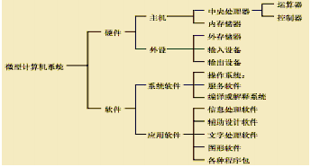
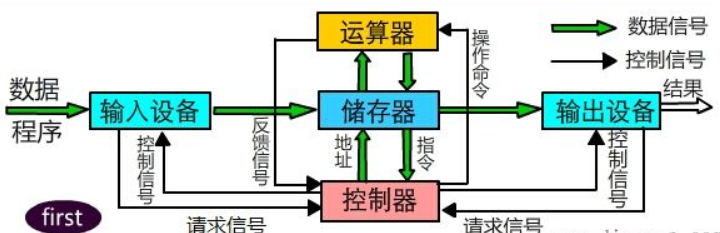

计算机工作原理：
计算机的基本原理是存储程序和程序控制，预先要把指挥计算机如何进行操作的指令序列（称为程序）和原始数据通过输入设备输送到计算机内存贮器中。每一条指令中明确规定了计算机从哪个地址取数，进行什么操作，然后送到什么地址去等步骤。
1、第三个苹果的缔造者， 乔布斯。
2、世界首富的桂冠----------比尔盖茨。
3、“101页报名”的作者之一，被誉为“现代计算机之父”----冯诺依曼
4、破解德国的著名密码系统Eniama,他 “计算机科学之父”-----阿兰图灵。
5、图灵测试 为 人工智能打开了开端， *********
6、人工智能（Artificial Intelligence ，简称AI）
是让计算机 具有 执行某些 与 人类智能活动有关的 复杂的功能
(如判断、推理、识别、理解、学习、规划和问题求解等）的能力。
7、2011年，IBM公司研制的可以参加智力问答比赛的 “沃森（Watson）”软件系统能以每秒翻100万本书
1、计算机系统（ Computer System ）
是一种能按照事先存储的程序 自动、高效 地对数据进行 输入、处理、存储和输出的系统。
2、通俗的讲计算机系统是由 硬件 和 软件 两部分组成。

3、硬件 主要有五大部分组成（ 出入 控运 存）
4、计算机硬件 指可以看得见、摸得着的设备，也就是计算机的躯壳

分别为输入设备、存储器 、输出设备 、控制器、运算器；
其中 控制器与运算器共同组成了 中央处理器 CPU。
计算机可能处理的 数据很多，多种多样，文字、符号、图形、图像和语言、十进制数。
计算机是用二进制数来进行数据的表示与存储。
进制：进制也就是进位制，是人们规定的一种进位方法、是一种 计数 方式。
对于任何一种进制---X进制，就表示某一位置上的数运算时是 逢X进一位。
十进制是逢十进一，二进制就是逢二进一，以此类推，x进制就是逢x进位。
笔记：各进制转换成二进制：
整数部分： 除基 逆向取余法
小数部分：乘以基数 顺向取整法
为什么计算机用二进制而不是十进制来存储数据?
二进制数只有0和1两个数码，它的每一位都可以用电子元件来实现，且运算规则简单，相应的运算电路也容易实现
负数在计算机中都是用 补码 实现的。
计算机中的符号数有三种表示方法，即 原码、 反码 和 补码。
三种表示方法均有 符号位 和 数值位 两部分，
符号位都是用 0表示“正”，用1表示“负”，
而数值位，三种表示方法各不相同。
原码：最高位代表符号位，其它数值位是本身的二进制形式。
反码：最高位代表符号位，其它数值位依次取反。
补码：最高位代表符号位，数值位在其反码的基础上加1
考点：考负数的 原反补！！！
有符号数 就是用最高位表示符号（正或负），其余位表示数值大小
无符号数 就是所有位都用于表示数的大小
计算机中所有程序的运行都是在内存中进行的。
内存其作用是用于 暂时存放CPU中的运算数据， 以及与硬盘等外部存储器交换的数据。
一个字节等于8位 1B = 8b
内存越大越好，内存中最小的单位是位！！！
英文称谓 换算方法 容量大小（单位字节）
B 2 的0 次方 1 B == 8 b （一个字节等于8位）
KB 2的10次方 1 KB == 1,024 B
MB 2 的20 次方 1 MB == 1,024 KB
GB 2 的30 次方 1 GB == 1,024 MB
TB 2 的40 次方 1 TB == 1,024 GB
PB 2的50 次方 1 PB == 1024 TB
在计算机中，一串数码是作为一个整体来处理或运算的，称为一个计算机字， 简称字 （Word ）。
计算机存储一个 字所需的字节的长度，称为 字长（Word Size ）。